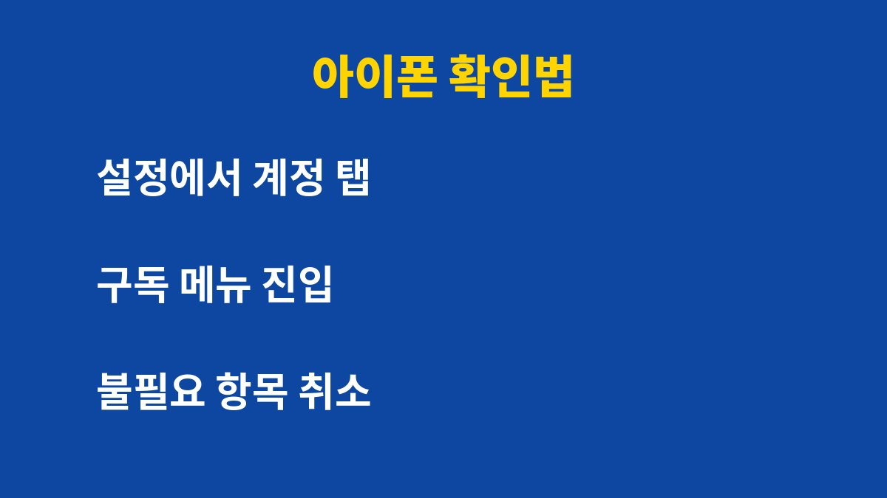
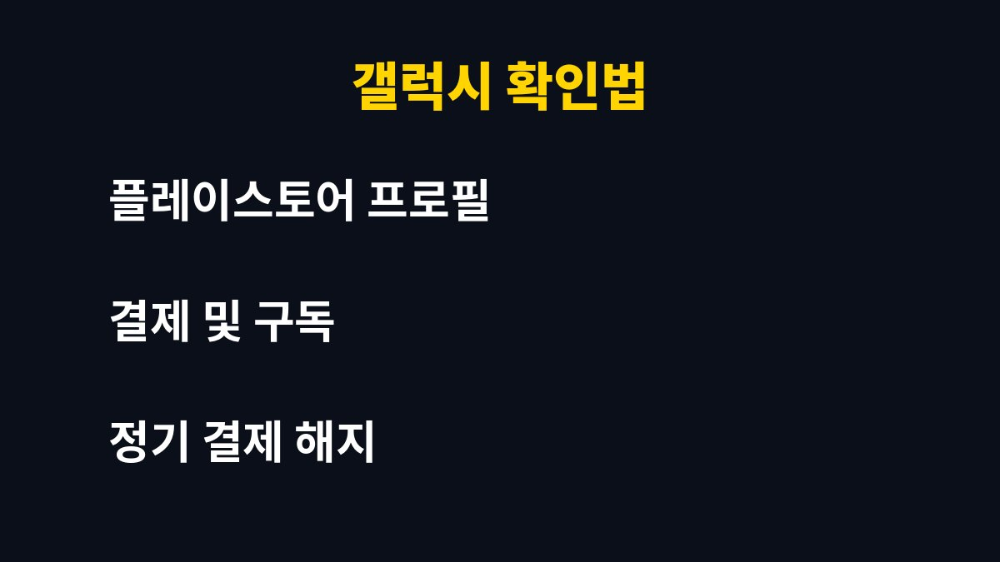

자동결제 구독은 한 달에 한 번이라도 점검하지 않으면 쓰지 않는 서비스에 계속 돈이 나간다. 스마트폰 앱 구독을 여러 개 쓰고 있다면 지금 이 글을 끝까지 읽는 것이 좋다.
그런데 구독 목록을 열어 보면 오히려 이미 잊은 서비스가 3개 이상 남아 있을 수 있다. 이유는 아래에 있다.
자동결제는 왜 모르는 사이에 계속 나가는 것일까?
무료 체험으로 가입한 앱은 체험 기간이 끝나면 자동으로 유료 결제로 전환되는 경우가 많다. 가입할 때 해지를 따로 하지 않으면 다음 달부터 결제가 이어진다.
금액이 작을수록 카드 명세서에서 눈에 띄지 않는다. 몇천 원짜리 결제가 여러 건 쌓이면 1년 기준으로는 적지 않은 금액이 된다.
구독은 앱 안이 아니라 스토어 계정에서 관리된다는 점이 핵심이다. 앱을 지워도 구독은 해지되지 않는다.
아이폰과 갤럭시에서 구독 목록은 어디서 볼까?

아이폰은 설정 앱 맨 위의 내 계정을 누른 뒤 구독 메뉴로 들어가면 된다. 활성 상태와 만료된 항목이 구분되어 보인다.
갤럭시는 플레이스토어에서 오른쪽 위 프로필을 누르고 결제 및 구독 메뉴의 구독 항목을 열면 된다. 여기서 정기 결제 중인 앱을 한 번에 확인할 수 있다.

| 구분 | 확인 위치 | 해지 방법 |
| 아이폰 | 설정 > 내 계정 > 구독 | 항목 선택 후 구독 취소 |
| 갤럭시 | 플레이스토어 > 프로필 > 결제 및 구독 | 항목 선택 후 구독 취소 |
| 웹 가입 서비스 | 해당 서비스 계정 설정 | 결제 관리에서 해지 |
스토어에 없는 구독은 어떻게 찾을까?
웹사이트에서 카드로 직접 가입한 서비스는 스토어 구독 목록에 나오지 않는다. 이 경우 카드사 앱의 결제 내역에서 같은 가맹점이 매달 반복되는지 확인하는 것이 가장 빠르다.
최근 3개월 결제 내역을 훑어보면 같은 금액이 같은 날짜에 나가는 항목이 보인다. 그 항목이 지금도 쓰는 서비스인지 판단하면 된다.
해지 전에 꼭 확인할 것은 무엇일까?
구독을 취소해도 이미 결제한 기간까지는 이용할 수 있는 경우가 많다. 다만 서비스마다 환불 정책이 다르므로 해지 화면의 안내 문구를 읽어 보는 것이 좋다.
쓰는 서비스라도 연간 결제인지 월 결제인지 확인하면 비용을 줄일 수 있다. 가족 요금제나 공유 요금제가 있는지도 함께 살펴볼 만하다.
정리하면 매달 한 번, 3분만 투자해 구독 목록과 카드 내역을 비교하면 새는 돈을 대부분 막을 수 있다. 달력에 정기 점검일을 정해 두는 습관이 가장 효과적이다.
이런 생활 밀착 IT 정보가 도움이 되었다면 구독을 눌러 두면 다음 글도 놓치지 않을 수 있다.
기사·공식 발표 기준이며 출시·가격 정보는 바뀔 수 있다.